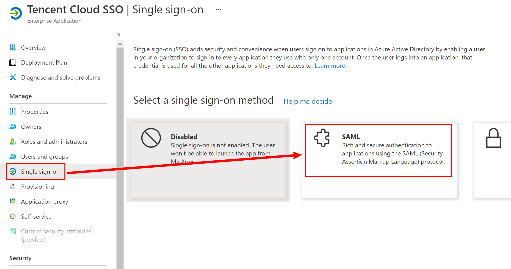
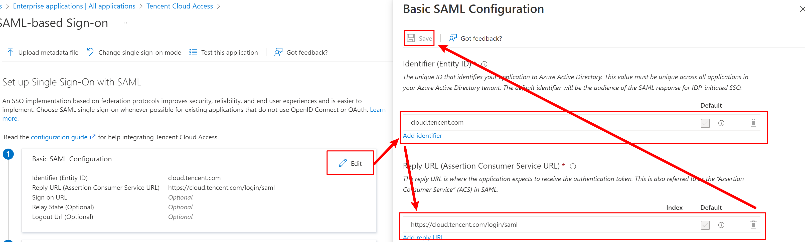
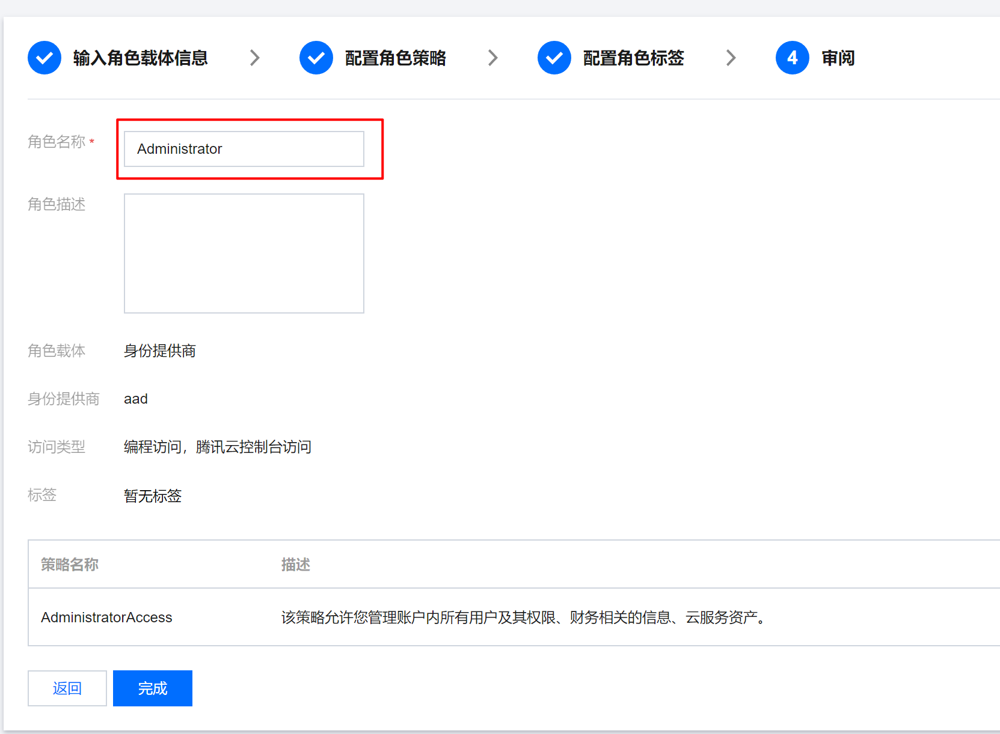

在之前的博客《利用Azure AD实现Homelab环境中应用的统一认证和授权》中，我们详细讨论了如何使用Azure AD来实现统一认证。而在《Jenkins集成Azure AD》中，我们详细介绍了自托管的Jenkins如何与Azure AD集成。
在本文，我将介绍腾讯云如何和Azure AD集成。
第一步：在Azure中创建应用
1. 在企业应用中创建一个新的应用
在Azure Active Directory中找到Enterprise applications(企业应用)创建一个新的应用，参考下图，在本文中将会使用Tencent Cloud SSO作为应用名称。
2. 配置SSO
完成创建之后，进入应用之后，按照下图创建基于SAML的SSO。
需要配置的内容下图，总共五部分
我们需要配置的主要是前两个部分。
基础配置
参考下图进行设置，标识符（实体 ID）和回复 URL（断言使用者服务 URL）参考下表

| 所在站点 | 标识符（实体 ID） | 回复 URL（断言使用者服务 URL） |
|---|---|---|
| 中国站 | cloud.tencent.com | https://cloud.tencent.com/login/saml |
| 国际站 | intl.cloud.tencent.com | https://intl.cloud.tencent.com/login/saml |
属性和声明
在配置中，主要增加了下图中标出的两条配置。
| Name(名称) | Namespace(命名空间) | Source(来源) | Source attribute(来源属性) |
|---|---|---|---|
| Role | https://cloud.tencent.com/SAML/Attributes | Attribute | user.assignedroles |
| RoleSessionName | https://cloud.tencent.com/SAML/Attributes | Attribute | user.userprincipalname |
添加过程如下：

下载元数据文件
在第三部分中下载元数据文件。
第二步：在腾讯云中创建角色SSO
1. 创建角色SSO
在访问管理->身份提供商->角色SSO中新建一个提供商。
参考下图创建一个新的提供商， 其中元数据文档为Azure AD中下载的元数据文件。打开创建完成的提供商，将登录链接保存下来。
2. 创建角色
在访问管理->角色中新建角色，可以根据需求创建一个或者多个角色。在本文中，创建了两个角色，具备管理员权限的Administrator和只读权限的ReadOnly。
创建角色的过程如下：
点击“新建角色”后，在弹出框中选择“身份提供商”
身份提供商类型选择SAML，身份提供商选择之前创建的身份提供商，在本文中为aad
角色策略可以根据角色需求设置，比如现在创建的是Administrator，因此选中了AdministratorAccess
然后下一步配置角色标签，根据需求自行添加。在审阅中设置角色名称。

完成之后会自动跳转会角色列表，在角色列表中找到刚刚创建的角色并打开。参考下图找到两个重要信息：RoleArn和ProviderArn
第三步：在Azure AD中添加角色
添加角色
返回Azure Portal页面，在在Azure Active Directory -> App registrations（应用注册）中选择All Applications，然后找到与企业应用同名的应用并打开，如下图。

在Manifest中修改appRoles, 添加新的Role如下图所示。
内容可参考如下设置
1 | { |
需要注意的是：
- id是uuid，可以自行生成
- value的格式是
RoleArn,ProviderArn
给AD用户/用户组分配角色
返回到创建的企业应用中，找到“用户和组”，根据需求添加用户和组即可。
第四步：测试
打开角色SSO中的登录链接，得到如下界面。